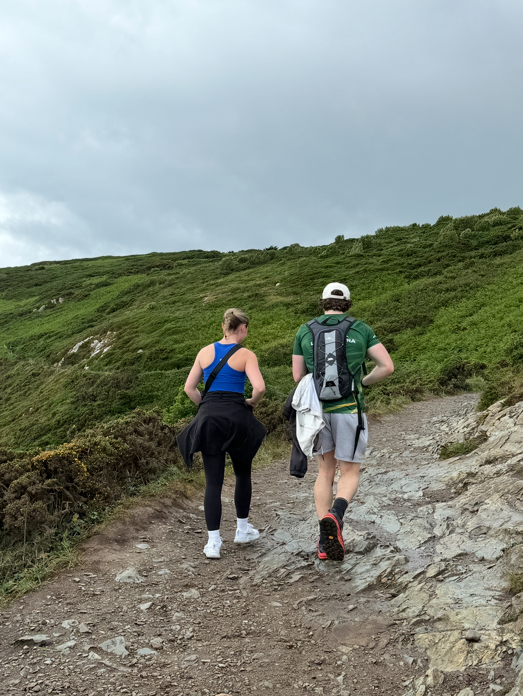

Foundation
Nail the basics of strength training, cardiorespiratory training, and nutrition.
Explore the Basics
Fitness is simple.
Or at least it should be.
Ignore the noise. Master the basics.
The Problem
The fitness industry profits when people stay confused.
Only 2.1% of nutrition advice online aligns with public health guidelines — DCU & MyFitnessPal study
Let's strip away the bullshit
Simple Methods, Real Results
The Path
Nail the basics of strength training, cardiorespiratory training, and nutrition.
Explore the BasicsSmall consistent progress compounds over time.
Learn Habit BuildingDive deeper. Learn more. Expand your training horizons.
Open the LibraryFlip cards to reveal detail.
Cardiovascular
500%
Greater risk of early death from low vs elite fitness
VO₂ Max—your cardiorespiratory fitness—is the single strongest predictor of how long you will live, outranking smoking, diabetes, and genetics.
Moving from the lowest fitness tier to the elite top tier cuts your risk of early death fivefold.
Every 3.5-point increase in VO₂ Max reduces that risk by 13% to 15%.
There is no ceiling. The higher your VO₂ Max, the longer you live.
View Study →Tap for detail •
Hover for detail •
Muscular
15–25%
All-cause mortality reduction from strength training
Regular strength training is associated with a meaningful reduction in all-cause mortality risk, independent of aerobic activity.
View Study →Tap for detail •
Hover for detail •
Brain Health
20–40%
Dementia risk reduction from regular activity
Regular activity significantly lowers risk of Alzheimer's disease and related dementias, largely through improved vascular health and neuroplasticity.
View Study →Tap for detail •
Hover for detail •
Longevity
+4–7 yrs
Extra life expectancy from midlife fitness
Higher midlife cardiorespiratory fitness is associated with several additional years of life.
View Study →Tap for detail •
Hover for detail •
Injury Prevention
68%
Sports injury reduction from strength training
Think lifting weights is just for building muscle? Clinical evidence shows it is the single most effective way to prevent getting hurt.
A massive analysis of over 26,000 athletes revealed that strength training cuts overall sports injuries by nearly 68% and slashes overuse injuries by almost half—easily outperforming stretching and balance training alone.
View Study →Tap for detail •
Hover for detail •
Mental Health
22–34%
Depressive symptom reduction from physical activity
Movement isn't just good for the body—it is a powerful tool for your mind. A landmark review analyzing over 128,000 participants found that regular physical activity reduces depressive symptoms by 22% to 34%.
Structured exercise programs work just as well as—and in some cases outperform—traditional talk therapy and standard antidepressant medications for mild-to-moderate depression. Higher-intensity workouts deliver the most significant mental health boosts.
View Study →Tap for detail •
Hover for detail •
Aging
3–8%
Muscle mass lost per decade without training
Without resistance training we lose 3% to 8% of our muscle mass every decade. We lose 30% of our muscle between 50 and 70, and up to 50% by the time we're 80.
Resistance training is the ultimate antidote to sarcopenia.
View Study →Tap for detail •
Hover for detail •
Bone Health
51%
Osteoporotic fracture risk cut by resistance & impact
The true danger of osteoporosis isn't just thin bones—it's the risk of a catastrophic bone break. A comprehensive meta-analysis of clinical trials revealed that structured exercise programs combining progressive resistance lifting and impact jumping reduce the risk of sustaining a major fracture by 51%.
While casual walking or swimming fails to stress the skeleton enough to trigger growth, the heavy mechanical load of lifting and the sudden force of jumping stimulate bone cells to deposit dense new mineral layers, making your framework highly break-resistant.
View Study →Tap for detail •
Hover for detail •
Write down a simple baseline plan that you can easily stick to, no matter how chaotic or busy your week gets.
Set the bar low to guarantee early psychological wins, then focus on overachieving later.
Identify a few low-friction areas of your diet and lifestyle where you can make small, meaningful substitutions and start there.
Master the simplest changes first, and let those habits compound before trying to progress any further.
Choose forms of movement you actually look forward to—like hiking, tennis, or sea swims—instead of forcing yourself through routines you hate.
Make it social by training with a gym buddy or joining a local club to effortlessly handle your long-term accountability.
Learn the fundamental principles behind your training and nutrition so you never have to blindly rely on a trainer.
Build the knowledge required to confidently modify your own routines on the fly when traveling or short on time.
You don't have to be perfect.
You don't even have to be good.
But just start!
Let's be clear: you do not need to hire a coach or a personal trainer to get into the best shape of your life.
Everything you need to build a healthy, strong and capable body is available right here on this website — completely free.
If you take the core Basics of Training principles and apply them consistently, you will achieve incredible results all on your own.
Personal fitness consultancy is optional: a well-rounded approach with an emphasis on education and understanding — so you eventually no longer need anyone else.
Flexible support · No contracts · Read the full consultancy model